Microsoft · 2025
Gaining alignment on a simplified acquisition framework
I own the charter for the AI agent lifecycle and mental model in Microsoft Teams. Though agents are a major platform bet, they face low engagement, therefore I established frameworks and principles to simplify our acquisition patterns so users could focus on engaging with agents.
The outcome for this work was alignment to shift from a side panel pattern for agent acquisition to a scalable modal surface. Though data showed install rates were higher in the side panel compared to the modal, the UI pattern itself was flawed and it harmed our long term objective of agents appearing like teammates in Teams.
Context
AI agents help users be more productive in Teams
Agents are essentially chatbots, but they’re powered by LLMs. And inside of Teams, they were either built by Microsoft (1P), or built by third-party developers (3P) for Teams (i.e. Asana). The purpose of these agents is to augment Teams users’ productivity and collaboration; it’s up to developers to define how they do that.
Our team enables developers to build apps and agents for Teams; my role specifically is on the lifecycle and mental model for agents in Teams. At time of writing, agents are a brand new thing, and moving fast. Each new technological development creates new capabilities for agents, and thus internal teams move quickly on these developments, whereas I focused on establishing frameworks and consistent patterns that these teams could build from.
Our platform was at an inflection point, facing a ton of fragmentation from a surge of new AI agent capabilities and unresolved debt from legacy app patterns. We had to start creating clarity soon.
Our current situation
Fragmented app acquisition and legacy debt impacted agent engagement
Agents are an app type. You install them from the app store, and then use them in Teams. This pattern broke when you tried to add an agent inside of a collaborative space like a Chat, Channel, or Meeting.
Entry points to apps were fragmented: Despite the store pattern, agents had a separate acquisition surface from apps. This was initially designed as an experiment to improve discoverability, but it was never resolved.
The side panel was a flawed acquisition pattern: The side panel is designed as a surface to remain open and display contextual information to the main canvas; this pattern is broken when it behaves as a transactional acquisition surface.
Agents lacked an acquisition surface in Meetings: In meetings, the side panel was exclusive to acquiring apps, but in chats and channels, it was exclusive to acquiring agents.
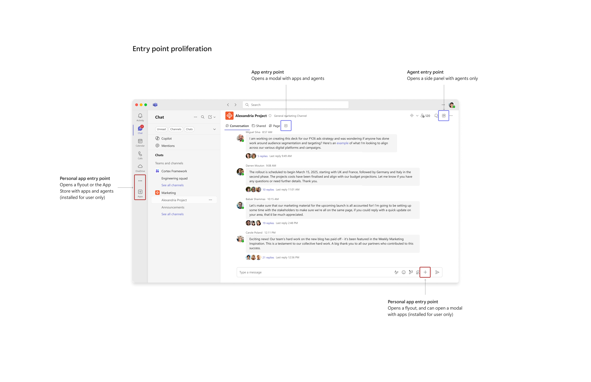
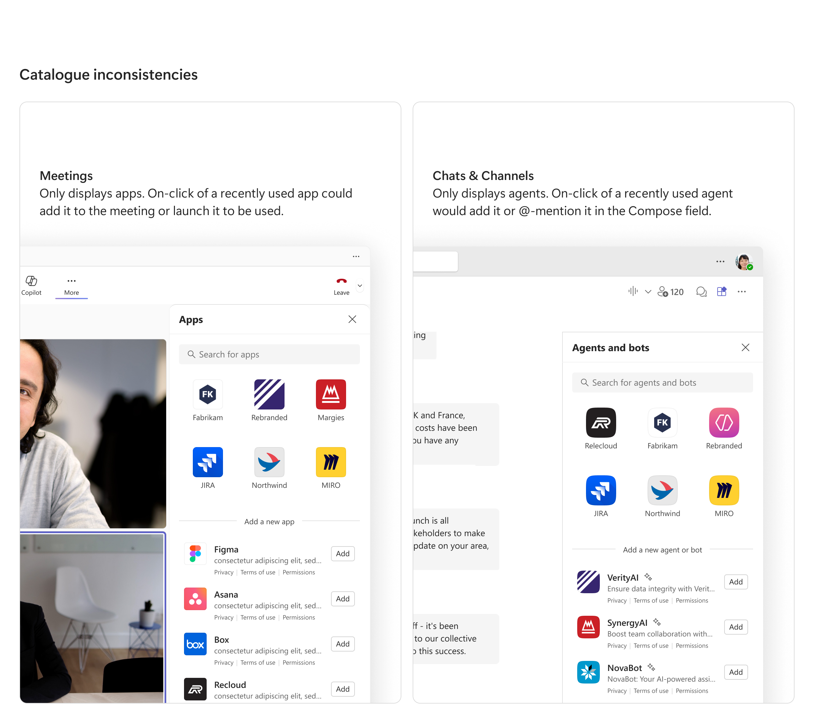
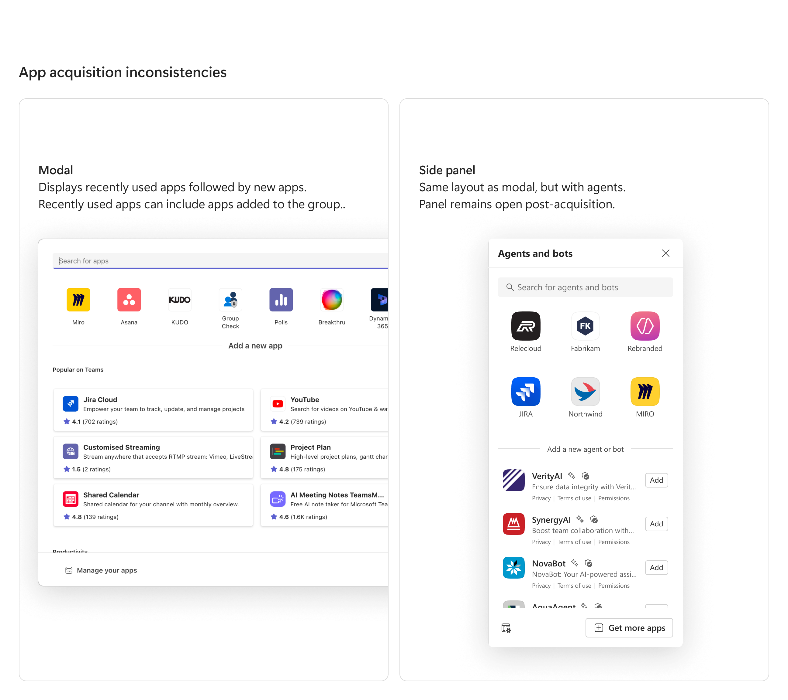
Challenges
Leadership wanted agents to be designed like people, despite opposing research
One of the largest pushes from a strategic level was to treat agents akin to people. Leadership’s hypothesis here was this would simplify the mental model for agents. Though we had research that opposed exactly that, they weren’t receptive.
Despite design (my entire team) disagreeing with the approach to treat them like people, I understood the need to simplify the agent mental model.
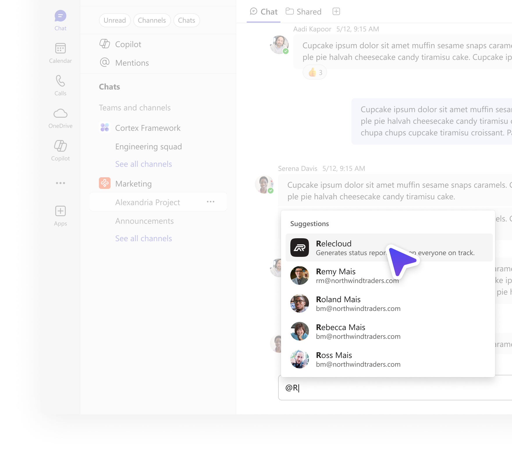
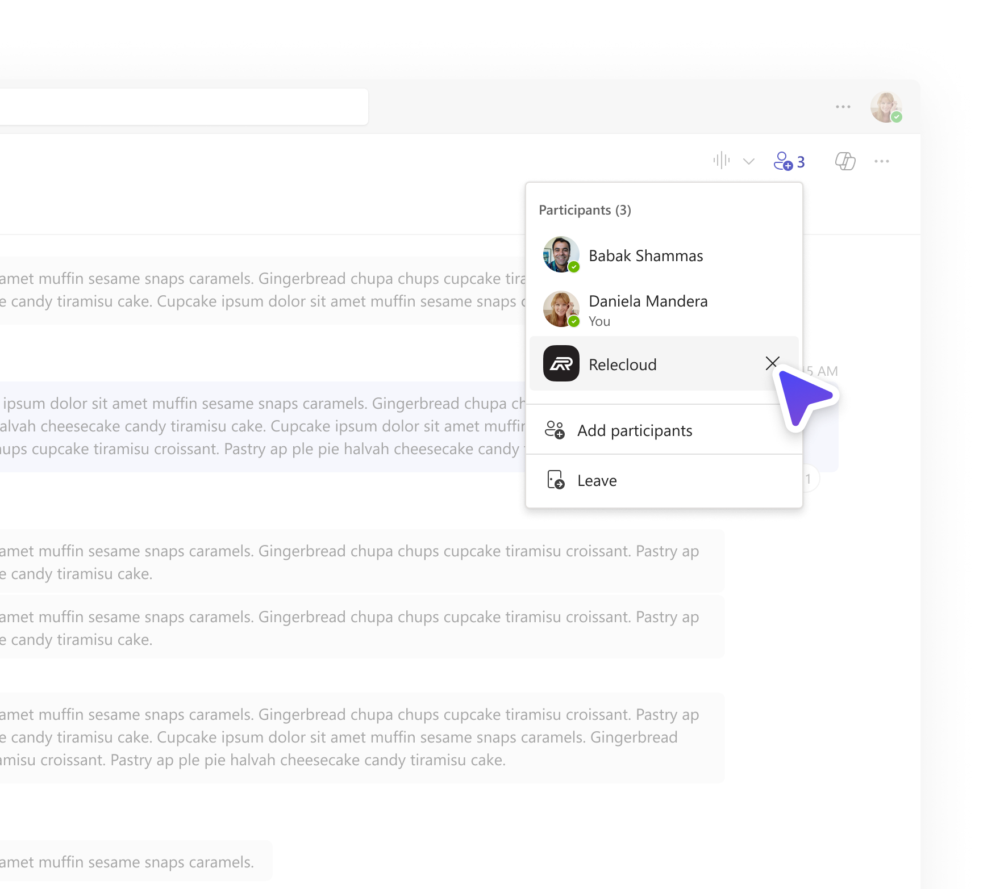

Strategy
Success required a mental model shift, not more installs
Though the side panel created fragmentation, not everyone wanted to let it go. It was a result of a 3-year project and the data showed its install rate was higher than the modal approach for apps (13% install rate vs. 4%).
I took the data seriously, but I also knew install rate in isolation served no value (i.e. one user can install 100 agents, but use none all year). I framed our existing user journey as the experience that defines a users’ mental model; the opportunity shifted from “how might we improve acquisition” to “how might we better define the agent mental model and enable users to acquire the agents that they are most likely to engage with in their collaborative space?”
Principles
Grounding the design with principles focused on simplicity
To best align everyone on the thinking behind this work, I defined design principles. My primary goal was to simplify as many things as we could and reduce concepts where possible. I saw opportunity to do this through reusing and reworking established concepts.
Simplicity
Reduce concepts where possible and reduce the number of things a user has to remember
Consistency across all surfaces
Have a single pattern across chats, channels, and meetings, with zero differences
Acquisition focused
Scope the resulting surface to acquisition, as the rest of interactions with agents can happen elsewhere
Relevancy in suggestions
Display agents that we have high confidence users will acquire into a group-space again
Scalable app acquisition
Reusing patterns to enable relevant agent discovery
To consolidate UI, I proposed repurposing the app modal for agents. To enable a clearer understanding of agents, I designed for having clear labelling to better educate users on what they’re seeing and why. This contrasts with the existing app modals, which have close to no labelling.
To support our 1P offerings, since they were contextual to a space, they would appear at the top of the modal. Recently used agents would follow and take the rest of the initial view (if a user has them). Again this contrasts existing modals which have these appear in a truncated horizontal list with no labels. Lastly, agents that were promoted by an organization would appear, in case a company had partnerships or tools they wanted their employees to use.
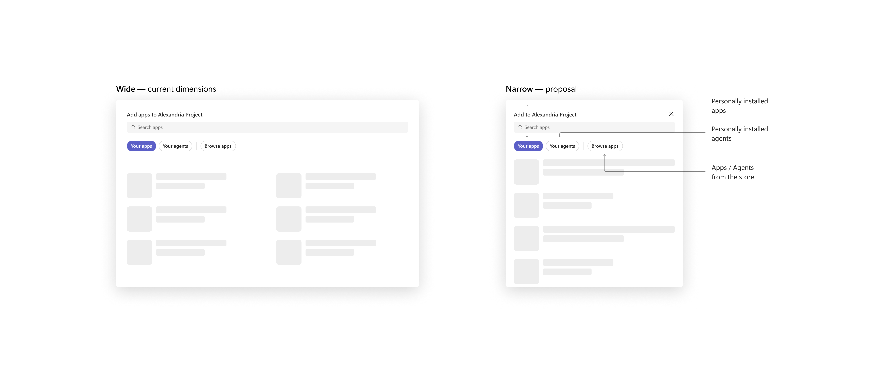
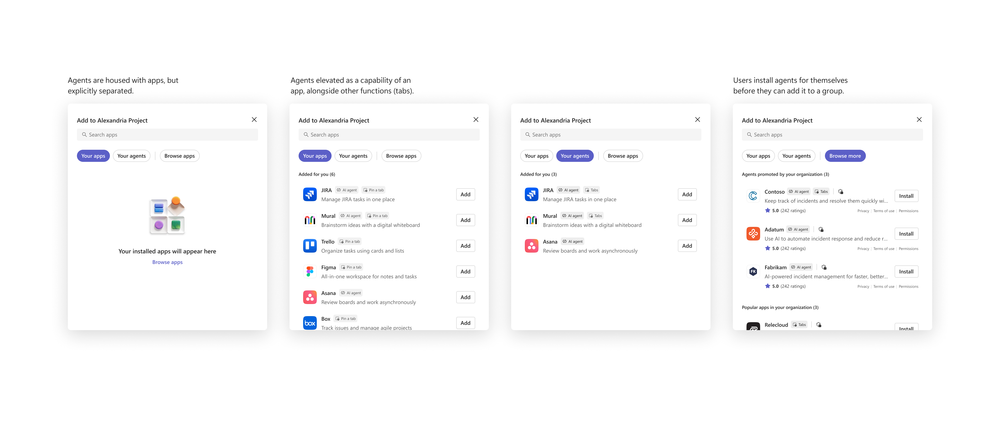
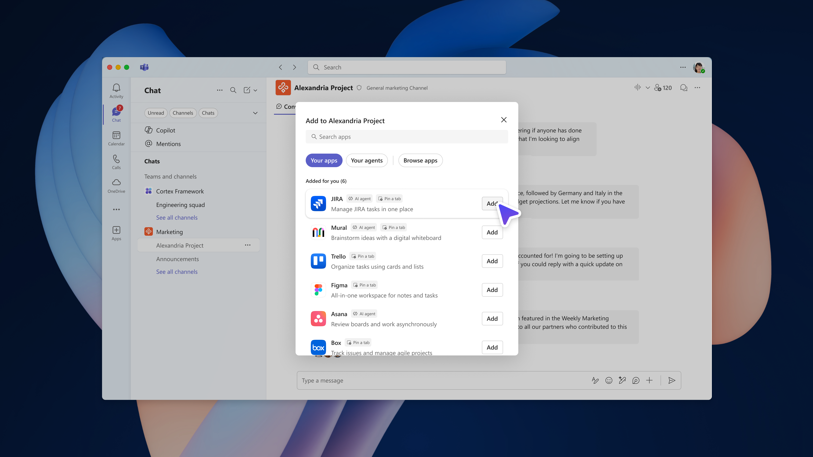
Short term alignment
Scaling a clear mental model
Knowing the LT push for agents appearing like teammates (despite the research), I proposed what this could look like short term, but also what we would need for creating clarity.
Across all surfaces, users could get to the modal from the roster. The roster would show a placeholder section for agents, so users begin to understand that management happens there. Once they open the modal, we could inform users of how they could engage with agents, and post-acquisition, the agent could automatically be @-mentioned in the chat to kick-start engagement. Once the agent is acquired, we could also include a link to 'Manage' in the status message, to send users back to the roster.
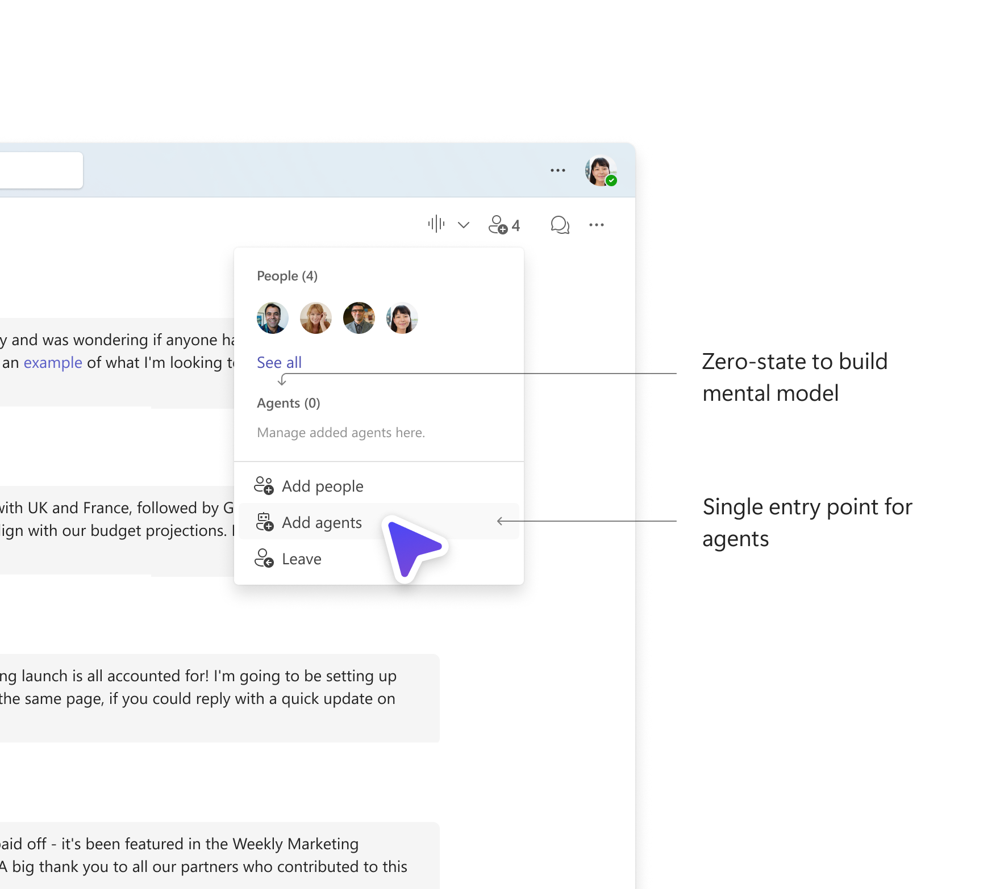
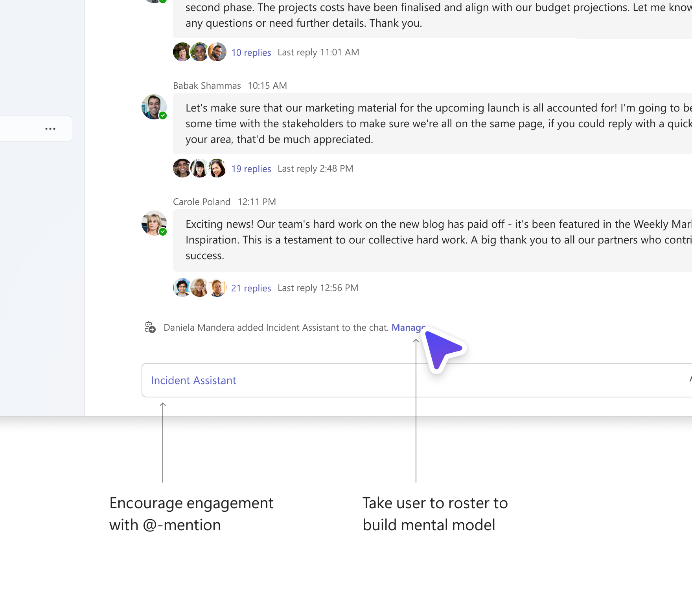
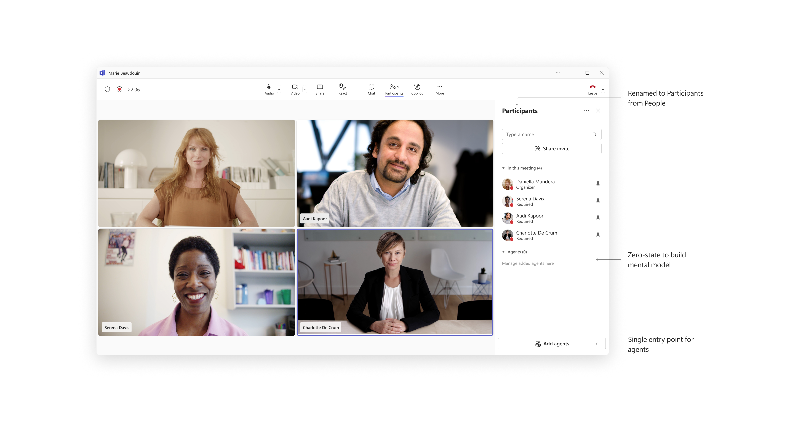
Ambitious goals
Proposing a northstar to treat agents as their own entity
Now I also proposed what our northstar could look like if we followed the research and used people patterns to inform our UI.
Customer feedback informed us that the sparkle icon was most recognizable when it came to AI. Rather than hiding agents under people patterns, we could surface this directly for users in the header, and complete the lifecycle and develop the reinforcement loop for awareness with agents.


Outcomes
Socializing the rationale and proposed changes
The following step, which was relatively simple, was to socialize this change to the many partner teams I worked with and gather feedback and unique scenarios from their teams. The mental model would continue to be defined as agents are still getting more complex. For the near term, agents will continue to be represented as people to help users understand their capabilities and interaction patterns.
The future opportunity for improved discoverability evoked strong feelings — people wanted Teams to be simple and wanted to reduce concepts in the header... however this logic was flawed as agents were net new, and simplifying headers didn't make sense when our actual number of capabilities was expanding. We were adding new features, and hiding them under legacy symbols and surfaces, and then being surprised about their poor performance.

Reflection
Learnings
This was a difficult challenge to try and align everyone on a mental model for something so new. Everyone had their own idea of what agents should be like. In addition, with most people involved in this project being at Microsoft for over 5 years, and some closer to 10, politics became super difficult to navigate. It was tough to decipher what was an actual problem, versus what someone thought to be a problem.
I also learned to focus on the goal, rather than optimizing for a single metric. With large, disparate teams, it's easy to get carried away with optimizing for a single metric that's important to that team, but in the end, it just creates more fragmentation. The quantitative is important, but only when it's properly looked at qualitatively.